pill benchmark · local model evaluation · October 2026
MiniCPM-V 4.7 on a 24 GB Mac: useful, within limits
A 35B-parameter MoE model, squeezed to 11.3 GB, benchmarked with pill's three tiers and compared with Gemma 4 and four frontier models.
The short version
MiniCPM beat Gemma 4 on the things that decide whether a model can be your everyday local default: it was the only candidate that passed the multi-run memory and reliability gate, and it never timed out on a long task in Tier 3 beyond two Go runs. It is not a frontier substitute. On well-specified build tasks (landing pages, a small app, a feature in a known codebase, data cleaning) its median result is 88–98 out of 100, but roughly one run in five goes badly with no warning, and it matched the frontier models only on its best runs. On open-ended data analysis it is clearly weak (Opus judge: 9–30 out of 100 in all six runs). The "simple tasks only" framing is roughly right, with one correction: the dividing line is analytical reasoning, not task size.
1. What the three tiers test
Can it be an agent at all?
Cold-start the model, send one large prompt (must answer in 60 s), then make it drive Pi through a real tool call: read a file and report a random code. Free memory must stay above 10%.
Can it build something alone?
Write a tic-tac-toe engine and CLI in Node.js from a spec, unattended, within 15 minutes. A hidden verifier runs 22 checks. Pass means 22/22 on time, with memory headroom.
Realistic work
Seven tasks, each scored 0–100 by hidden tests: a Go CLI feature, data cleaning, data insight with an ML model, a Kanban app, and three landing pages. Frontier models give the baseline.
Tier 1 and 2 decide "default model" status (pass/fail). Tier 3 shows how good the work is. Tier 2 is narrow: some wrong tic-tac-toe solutions still scored 22/22 in an earlier review.
2. Scores per task
Frontier models and Gemma: one run per cell (a different score on rerun is possible). MiniCPM: 6 runs per cell (one first run plus the five requested rounds). Scores are hidden-test scores, except py-insight, shown here as the automated score; the Opus judge scored it separately (section 5).
| Go CLI feature | Data cleaning | Data insight (auto score) | Kanban app | Landing: nursery | Landing: Mars domes | Landing: tax software | |
|---|---|---|---|---|---|---|---|
| Opus 5.5 (medium) 1 run | 100 | 100 | 100 | 100 | 100 | 100 | 100 |
| Sonnet 5.5 (medium) 1 run | 100 | 100 | 92 | 100 | 96 | 100 | 100 |
| Haiku 5.5 (high) 1 run | 100 | 100 | 95 | 100 | 100 | 100 | 100 |
| GPT-5.6 Luna (high) 1 run | 100 | 100 | 90 | 98 | 89 | 93 | 88 |
| Gemma 4 UD-IQ3_S 1 run | 13* | 68 | 0* | 100 | 92 | 3* | 3* |
| MiniCPM IQ2 median 6 runs | 88 | 90 | 40 | 90 | 93 | 95 | 98 |
| MiniCPM IQ2 mean | 85 | 82 | 44 | 76 | 71 | 95 | 91 |
| MiniCPM IQ2 range | 67–94 | 57–96 | 40–60 | 40–92 | 18–96 | 87–100 | 54–100 |
* = timed out (Gemma: 30–40 minute cap; the run was still working).
Against Gemma 4
The comparison depends on the question. On the reliability gate MiniCPM IQ2 passed 5 of 5 runs; Gemma 4 UD-IQ3_S failed its 3-run gate (two runs over the 15-minute cap), and the older Q3_K_XL and IQ4_XS builds failed on swap or memory. In Tier 3, Gemma finished 3 of 7 tasks and timed out on 4, while MiniCPM timed out only twice in 42 runs. But on the tasks Gemma did finish, it was as good or better: a perfect Kanban (MiniCPM median 90) and a nursery page of 92 (MiniCPM median 93). Gemma has one run per cell, so "Gemma is better at front-end" is not established.
Against the frontier models
Opus, Sonnet and Haiku scored 92–100 everywhere on their single runs; GPT-5.6 Luna 88–100. MiniCPM's median is within 10 points on five of the seven tasks, but never ahead, and falls 50–60 points behind on data insight. The speed gap is mostly on Go and data work:
| minutes per run | Go CLI feature | Data cleaning | Data insight (auto score) | Kanban app | Landing: nursery | Landing: Mars domes | Landing: tax software |
|---|---|---|---|---|---|---|---|
| MiniCPM | 21.8 | 17.4 | 13.7 | 3.5 | 6.1 | 6.3 | 5.9 |
| Haiku | 2.0 | 2.4 | 10.5 | 1.4 | 4.3 | 4.8 | 4.2 |
| Opus | 1.1 | 1.0 | 5.3 | 0.9 | 2.9 | 3.3 | 3.0 |
| Sonnet | 0.7 | 0.7 | 1.9 | 0.4 | 1.0 | 0.8 | 0.8 |
3. Memory, speed and reliability
| Model (pill gate result) | Runs | Tier 2 | Min free | Swap | tok/s |
|---|---|---|---|---|---|
| MiniCPM IQ2 11.3 GB pass 5/5, default | 5 | 22/22 | 22% | 0 | 25 |
| MiniCPM IQ3_XXS 13.7 GB fail | 5 | 20/22 | 11% | 7.2 GB | 24 |
| Gemma 4 UD-IQ3_S 11.3 GB fail (time cap) | 3 | 22/22 | 19% | 0 | 24 |
| Gemma 4 Q3_K_XL pass once, then failed | 1, 3 | 22/22 | 11%, 6% | 4.8–7.7 GB | 22 |
| Gemma 4 IQ4_XS fail 5-run | 5 | 21/22 | 9% | 765 MB | 21 |
Dense 24–27B models (Devstral, Qwen3.8) ran at 5–6 tok/s and failed the Tier 1 speed check. The MoE models here activate about 3–4B parameters per token, which is why they decode at 22–25 tok/s on this machine. Memory figures are the minimum free over the whole run.
MiniCPM's Tier 3 reliability: 2 timeouts in 42 runs (both Go), no crashes, and each run uses roughly the same 11 GB. The unreliability is in quality, not availability: the score spread inside a task is wide.
4. Run-to-run spread
The first single run of MiniCPM looked bad on Kanban (40) and the nursery page (31). Six runs say those were mostly bad draws, but not entirely: each task still has a failure run.
Band = min to max of six runs; the line is the median. Scale 0–100.
5. Where it falls short: data insight
The insight task asks for a report with charts and a churn model on a subscription dataset with seven planted patterns. An Opus judge scored all six MiniCPM reports against the hidden truth (scores 20, 9, 15, 30, 19, 12; the same report scored 12 and 20 on two judge passes, so treat single scores as ±8).
Patterns found in the six reports. Never found: the September 2024 price increase and its churn spike. Modeling rigor was at the floor every time; the common failure is a churn model that trains on the same people it labels as churned (a leak that gives AUC 1.0), plus cleaning steps (channel labels) that never reach the charts.
This is not a size problem: the task is not large. It is the open-ended part (choose what to test, notice a leak, reconcile two numbers) where a small quantised model has little to lean on. Frontier scores on this task (judge, one run each): Opus 96, Haiku 91, Sonnet 87, GPT-5.6 Luna 64.
6. How the landing pages look to a person
The automated scores check structure, accessibility and responsiveness. Taste needs a person, so the pages were rated blind (agent identities hidden) as Bad, Ok, Good or Excellent.
| Nursery | Mars | Tax | Total /9 | |
|---|---|---|---|---|
| Opus | Excellent | Excellent | Good | 8 |
| Haiku | Excellent | Good | Excellent | 8 |
| Sonnet 5.5 | not rated | not rated | not rated | — |
| GPT-5.6 Luna | Excellent | Good | Excellent | 8 |
| Gemma 4 | Good | not built | not built | — |
| MiniCPM (first run) | Bad | Ok | Ok | 2 |
One rater, one page per cell, and only MiniCPM's first run was rated: that run's automated scores were 31, 96 and 98, and the later rounds scored higher on nursery (91–96). The five later rounds were not rated by eye, so the gap on looks may be smaller than shown, but the Ok ratings on pages the checker scored 96 and 98 show the automated score overstates quality.
7. Does "better than Gemma, behind frontier, useful for simpler work" hold?
8. What the results look like
Rendered from the saved outputs of each run, one per model. Each caption shows the automated score and, for the landing pages, the blind rating. MiniCPM's image is its first run (the one that was rated); later rounds scored differently (see the range in section 2). The Kanban board has five cards added through the interface, so a board whose Add button does not work stays empty.
Kanban board
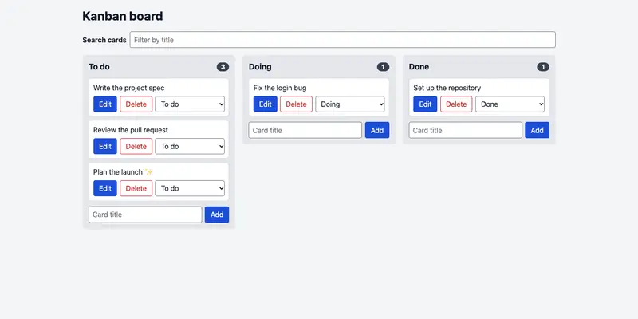
automated 100/100 · no rating (not a visual task)
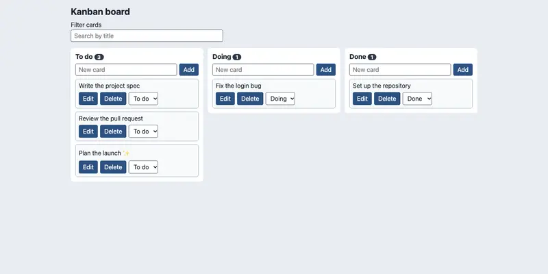
automated 100/100 · no rating (not a visual task)
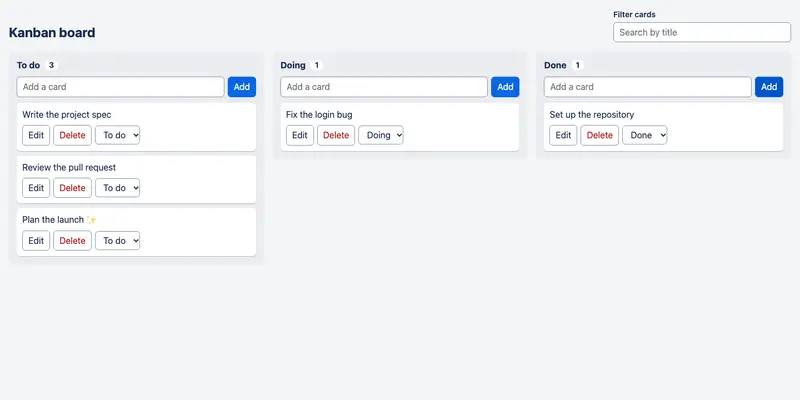
automated 100/100 · no rating (not a visual task)
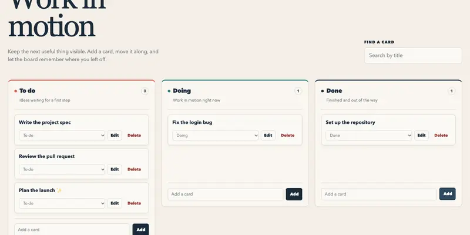
automated 98/100 · no rating (not a visual task)
automated 40/100 · no rating (not a visual task)
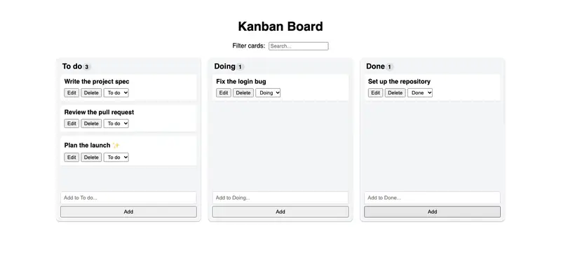
automated 100/100 · no rating (not a visual task)
Landing page: Montessori nursery
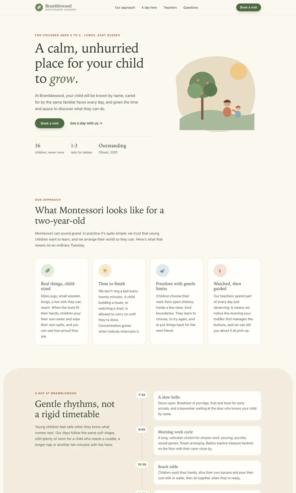
automated 100/100 · blind rating: Excellent
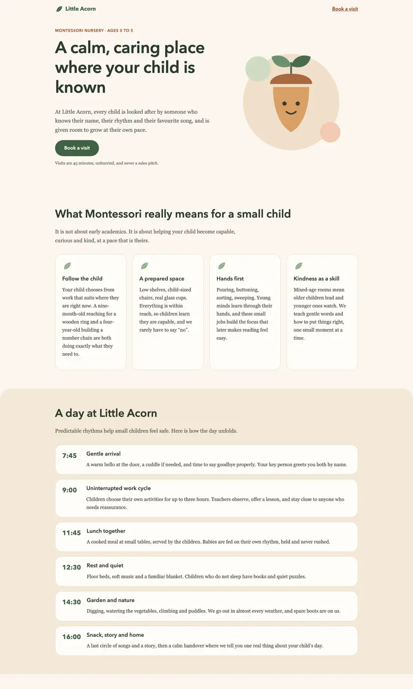
automated 96/100 · blind rating: not rated
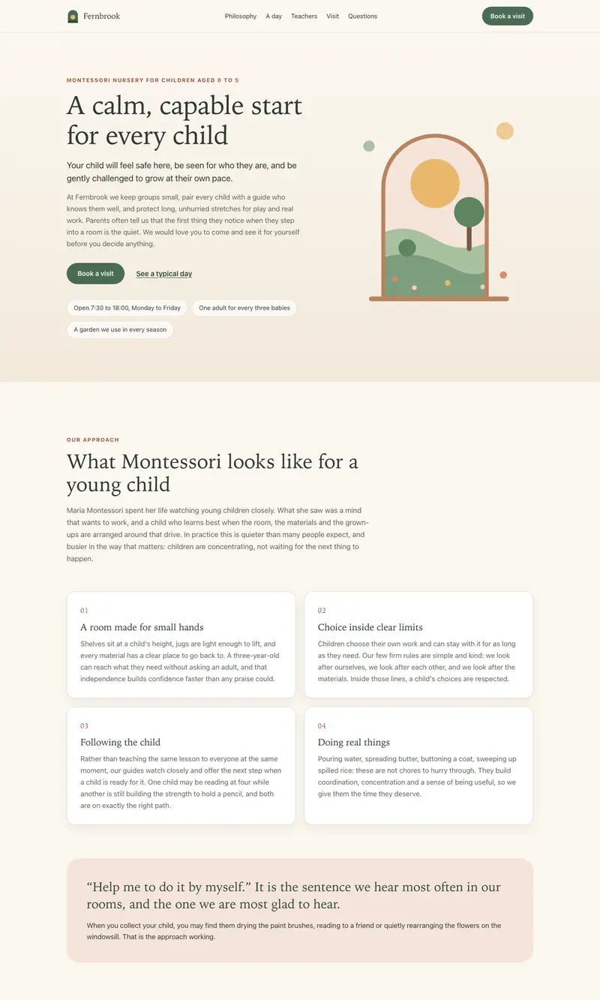
automated 100/100 · blind rating: Excellent
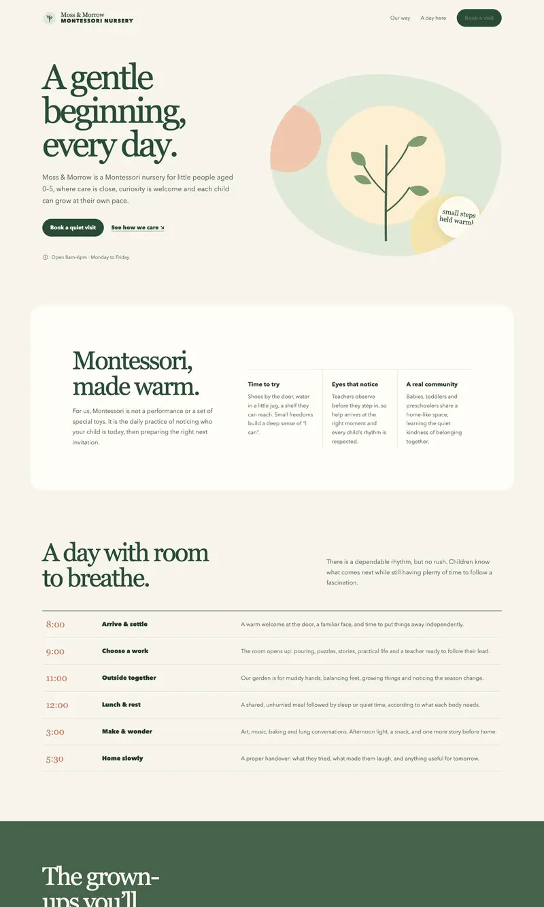
automated 89/100 · blind rating: Excellent
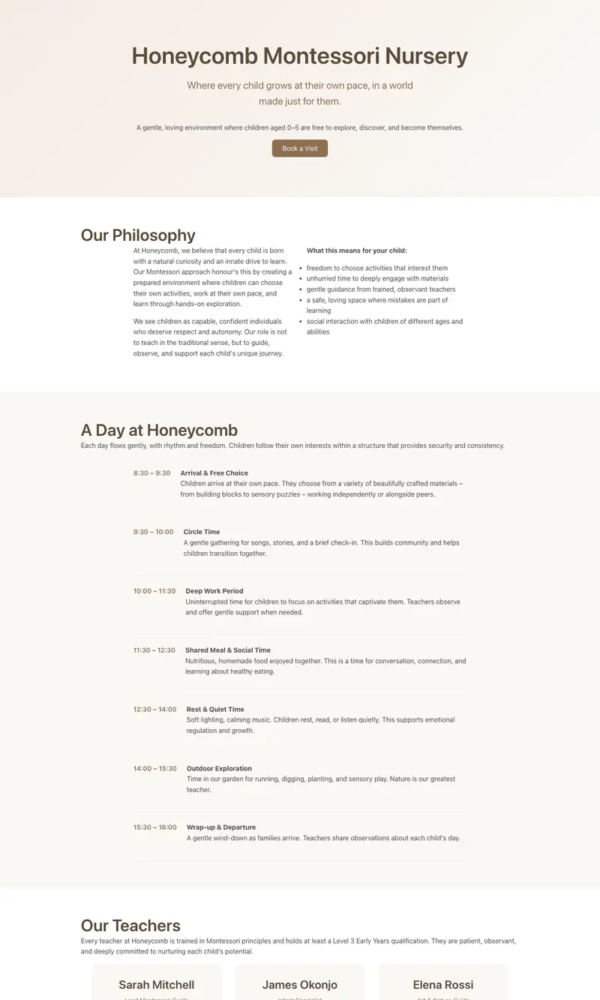
automated 31/100 · blind rating: Bad
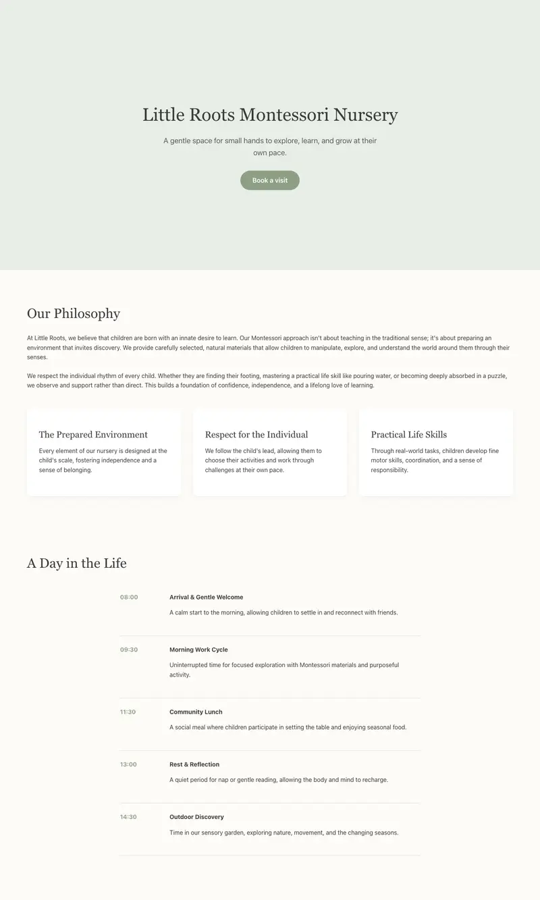
automated 92/100 · blind rating: Good
Landing page: Mars domes
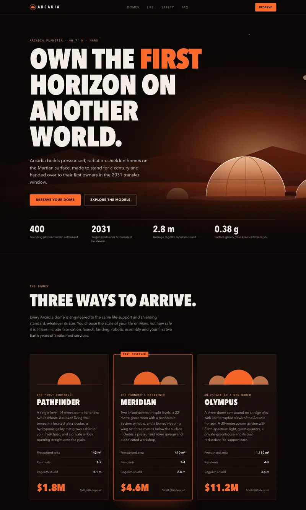
automated 100/100 · blind rating: Excellent
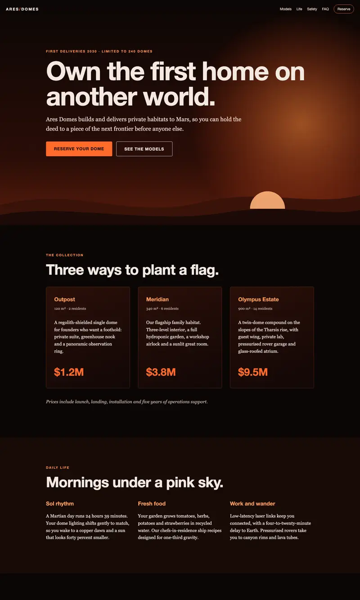
automated 100/100 · blind rating: not rated
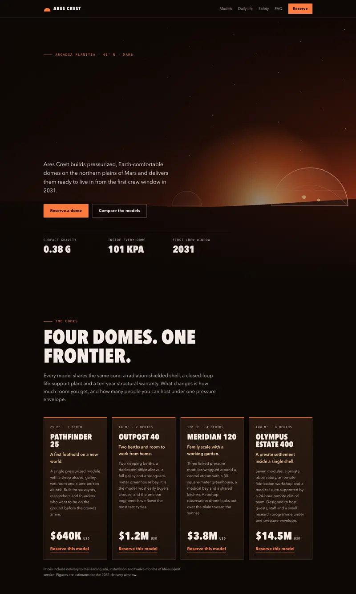
automated 100/100 · blind rating: Good
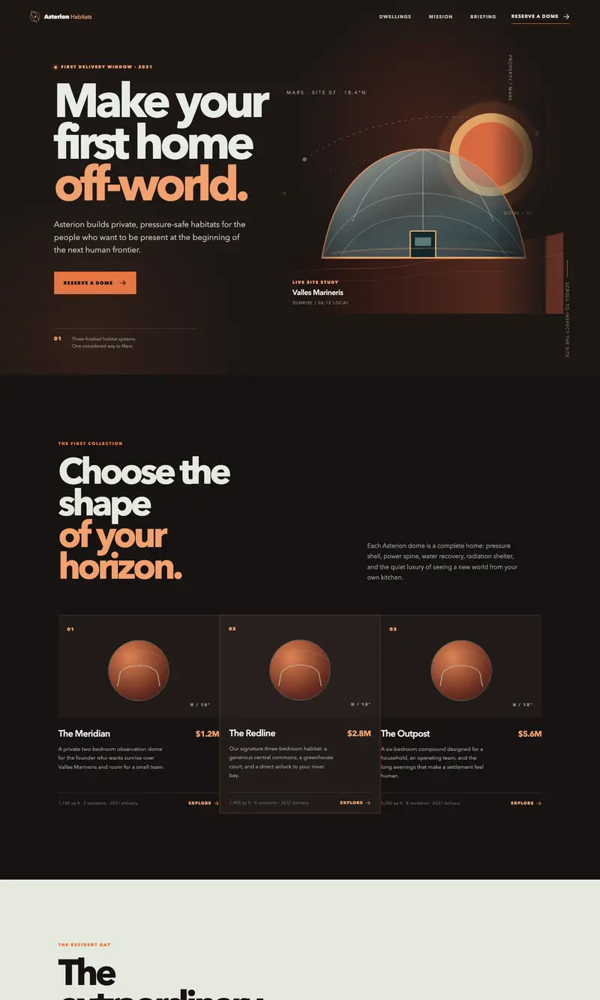
automated 93/100 · blind rating: Good
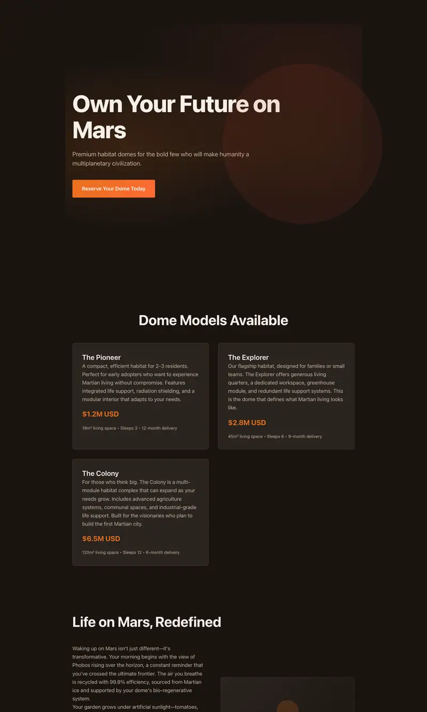
automated 96/100 · blind rating: Ok
automated 3/100 · blind rating: not rated
Landing page: automated tax software
automated 100/100 · blind rating: Good
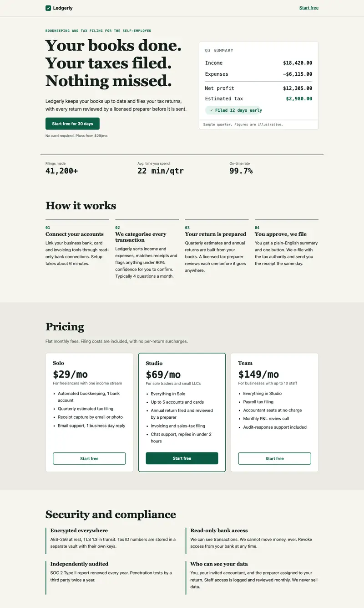
automated 100/100 · blind rating: not rated
automated 100/100 · blind rating: Excellent
automated 88/100 · blind rating: Excellent
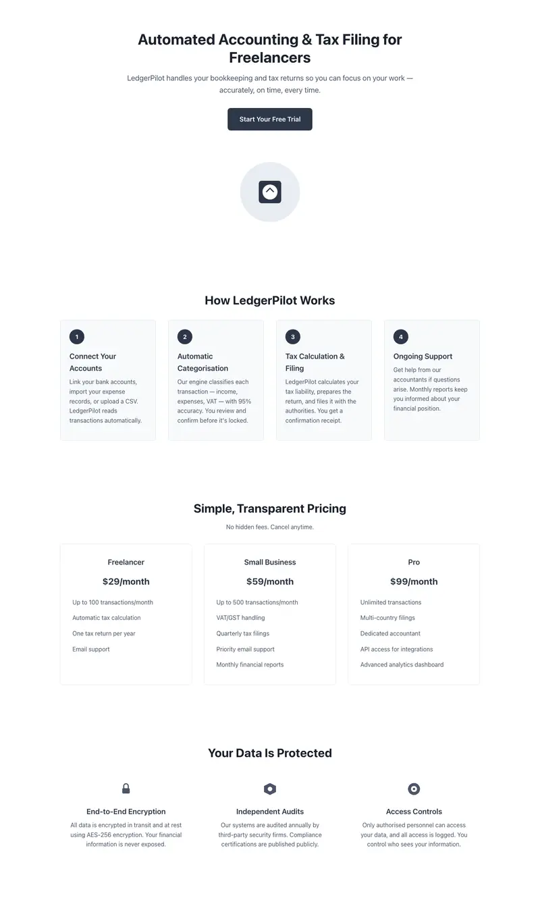
automated 98/100 · blind rating: Ok
automated 3/100 · blind rating: not rated
9. Where to use it, where not to
Reasonable fit
- Landing pages and small front-end builds (median 90–98 across all four)
- Adding a feature in a well-specified codebase (Go median 88, but allow up to 30 minutes)
- Data cleaning with a clear spec (median about 90; verify the output)
- Offline, free, private work where you will review the result
Poor fit
- Open-ended analysis or ML (judge mean 17 of 100)
- Anything you will not review: about one run in five fails badly
- Design judgement: pages that checkers passed were rated Ok by eye
- Vision work: the vision part was not tested at all
Practical rule
Keep it as the local default for build tasks you can check, and send analysis or anything unreviewed to a frontier model. Keep Gemma 4 UD-IQ3_S as an optional fallback for front-end work.